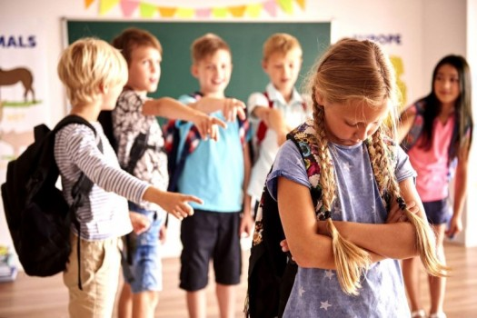

Çfarë është saktësisht një mënyrë e shëndetshme jetese? (A.D)
Stili jetësor i shëndetshëm përfshin ushtrimin, dietën e ekuilibruar, pushimin dhe largimin e zakoneve të këqija si pirja, duhani dhe ngrënia e tepërt. Çrregullimet e të ngrënit shkaktojnë zakone jo të shëndetshme të të ngrënit dhe kanë pasoja të rënda për shëndetin fizik dhe mendor. Anoreksia nervore karakterizohet nga humbja dramatike në peshë dhe preokupimi i tepërt me peshën dhe ushqimin. Obeziteti te fëmijët është një problem i rëndësishëm shëndetësor, i lidhur me kequshqyerjen dhe kaloritë e tepërta nga ushqimi i shpejtë. Obeziteti mund të shkaktojë sëmundje të zemrës, diabetin dhe rrezikun e lartë të kancerit, veçanërisht tek adoleshentët dhe fëmijët.
Arsimi (D.L)
Arsimi dhe edukimi janë proceset më të rëndësishme në shoqëri. Individualizmi dhe bashkëjetesa sociale kërkojnë vëmendjen maksimale në edukim për të ndërtuar një qenësi sociale në përputhje me idealet, vlerat, praktikat dhe stilin e duhur në mjediset shoqërore si shkolla, që fokusohet në mësimin dhe edukimin e brezave të rinj. Familja ka një rol themelor në shoqërimin fillestar të fëmijëve deri në përfshirjen e tyre si anëtarë të plotë të shoqërisë. Ajo ndikon ndjeshëm në formimin e karakterit dhe personalitetit të tyre. Familja duhet të jetë një institucion që ofron mbështetje, dashuri, paqe, qetësi dhe siguri, duke u siguruar që fëmija të ketë mundësinë për arsimim dhe edukim. Pastaj, shkolla luan një rol të rëndësishëm në formimin e individit. Përveç funksionit të mësimit të dijeve të reja, ajo është gjithashtu një ambient shoqëror, ku fëmijët njohin njerëz të tjerë, bashkëpunojnë me ta dhe ndajnë ide. Edukimi është një proces i ndjeshëm dhe i rëndësishëm, kështu që është e nevojshme të i kushtojmë vëmendjen dhe mbështetjen e duhur për të bërë edukimin sa më të lehtë dhe funksional për individin
Problematikat qe hasin shkollat ne ditet e sotme (D.L)
Shkollat hasin probleme të ndryshme, si infrastruktura e pamjaftueshme, higjena e dobët, numri i madh i nxënësve në klasa dhe mungesa e laboratorëve dhe palestrave. Këto probleme ndikojnë në cilësinë e mësimit dhe motivimin e nxënësve. Zbatimi i reformave, cilësia, vlerësimi, edukimi, motivimi i dobët, dhuna dhe mosinteresi janë problemet kryesore në shkollat tona. Ministria e Arsimit duhet të ndërmarrë veprime për të bërë shkollën një ambient më tërheqës dhe motivues për nxënësit. Stimulimi i memorizimit të theksuar dhe mungesa e vlerësimit të mendimit kreativ dhe të pavarur janë sfida të tjera në sistemin arsimor.
Marredheniet mesues-nxenes (A.K)

Marredhëniet mesues-nxënës janë të rëndësishme për suksesin e mësimit. Respekti reciprok, komunikimi efektiv dhe bashkëpunimi janë thelbësore. Respekti ndërmjet mesuesit dhe nxënësit është kyç. Mesuesi duhet të respektojë nxënësin si individ, ndërsa nxënësi duhet të vlerësojë dijen e mesuesit. Komunikimi është thelbësor. Mesuesi duhet të komunikojë qartë dhe të dëgjojë pyetjet dhe shqetësimet e nxënësit. Nxënësi duhet të komunikojë hapur dhe respektueshëm me mesuesin. Bashkëpunimi është themeli. Mesuesi dhe nxënësi duhet të punojnë së bashku për të arritur qëllimet mësimore. Mesuesi duhet të udhëzojë dhe ndihmojë nxënësin.
Varesia ndaj droges (A.K)
Varesia nga drogat është një problem i madh shoqëror dhe shëndetësor. Drogat mund të shkaktojnë varësi për shkak të efekteve euforike dhe ndikimit mbi sistemin nervor. Kokaina dhe amfetaminat rrisin nivelet e dopaminës, duke shkaktuar ndjenjën e euforisë. Varësia nga drogat ka pasoja të rënda për shëndetin fizik dhe mendor, duke përfshirë probleme të zemrës, frymëmarrjes, ankth, depresion, dobësi muskulare dhe dëmtim të trurit.
Shendeti mendor dhe mirëqenia tek adoleshentet (A.D)
Adoleshenca është periudha vendimtare për zhvillimin dhe mirëqenien mendore. Faktorët si modele të shëndetshme të gjumit, ushtrimet e rregullta, aftësitë përballuese dhe menaxhimi i emocioneve janë të rëndësishme. Mjediset mbështetëse në familje, shkollë dhe komunitet janë gjithashtu të rëndësishme. Për shkak të faktorëve të ndryshëm rreziku, adoleshentët mund të përjetojnë kushte të shëndetit mendor. Mediat dhe normat gjinore mund të ndikojnë në përjashtim dhe diskriminim. Çrregullimet emocionale dhe vetëvrasja janë shqetësuese në këtë grupmoshë.
Shfrytezimi seksual i adoleshenteve (B.M)
Shfrytëzimi seksual i adoleshenteve është një lloj abuzimi seksual ndaj fëmijëve dhe të rinjve. Në këtë rast, adoleshentët janë të përfshirë në aktivitete seksuale në këmbim të dhuratave, para, statusit dhe dashurisë, të cilat u jepen atyre nga personat që i shfrytëzojnë. Fëmijët dhe të rinjtë shpesh manipulohen për të besuar se kjo është një marrëdhënie e konsensshme dhe e dashur. Shfrytëzimi seksual i adoleshenteve mund të përfshijë edhe trafikimin dhe prostitucionin. Autorët e shfrytëzimit seksual të adoleshenteve mund të jenë të gjitha moshatat dhe gjinitë, dhe nuk ka kufizime në lidhje me racën. Kjo marrëdhënie mund të shfaqet si një miqësi, një marrëdhënie intime ose romantike. Fëmijët dhe të rinjtë që janë viktimat e shfrytëzimit seksual mund të përdoren gjithashtu për të rekrutuar ose detyruar të tjerë të bashkohen në grupet e shfrytëzuesve. Ligji penal në Shqipëri ka dispozita për të mbrojtur njerëzit, veçanërisht të rinjtë, nga shfrytëzimi dhe abuzimi seksual. Kjo përfshinë ligje që dënojnë abuzimin seksual dhe trafikimin e fëmijëve dhe adoleshentëve. Sistemi i drejtësisë është i përgjegjshëm për ndjekjen e autorëve të këtyre veprave. Nëse një adoleshent është viktimë e shfrytëzimit seksual, është e rëndësishme të tregohet dikujt për këtë përvojë. Kjo mund të ndihmojë në ndalimin e shfrytëzimit dhe në sigurimin e mbështetjes dhe ndihmës për viktimën. Është gjithashtu e rëndësishme të kërkohet ndihma nga profesionistët e shëndetit mendor dhe punonjësit socialë, për të shëruar dhe për të marrë ndihmë në lidhje me ndjenjat dhe pasoja të mundshme të abuzimit seksual. Ndalimi i shfrytëzimit seksual të adoleshenteve ka përfitime të rëndësishme, duke përfshirë mbrojtjen e të tjerëve nga abuzimi dhe sigurinë e viktimave.